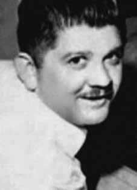

Rubens
Beyrodt
Paiva
BIOGRAFIA
Rubens Paiva iniciou sua vida política no movimento estudantil. Cursou engenharia na Universidade Mackenzie, em São Paulo, foi presidente do Centro Acadêmico e vice-presidente da União Estadual dos Estudantes de São Paulo. Em 1962, foi eleito deputado federal pelo Partido Trabalhista Brasileiro (PTB). Na madrugada do dia 1º de abril de 1964, fez um discurso convocando os estudantes e sindicalistas a resistirem ao golpe militar, em favor do presidente deposto, João Goulart. Imediatamente, teve seu mandato cassado.
Nessa ocasião, Paiva se exilou na antiga Iugoslávia, hoje Sérvia, e depois na França. Voltou ao Brasil em 1965 e deixou São Paulo, rumo ao Rio de Janeiro, com sua família. O engenheiro, porém, sempre manteve contato com os exilados.
Em 20 de janeiro de 1971, a casa da família Paiva foi invadida por seis militares e ele foi preso. O episódio é contado por seu filho caçula, o escritor Marcelo Rubens Paiva, no livro “Feliz Ano Velho”.
Paiva saiu de sua casa guiando o próprio carro, fato que permitiu à família provar que o ex-deputado havia sido preso, o que era negado pelos órgãos de repressão. Dias após sua prisão, uma irmã foi buscar seu carro no quartel e na ocasião recebeu um comprovante com o carimbo do Exército. Eunice, sua esposa, também foi detida juntamente com uma das filhas do casal, Eliana, com 15 anos, solta um dia depois. Eunice foi interrogada, permanecendo incomunicável durante doze dias.
Rubens Paiva foi transferido para o DOI-Codi, onde teria sido torturado até a morte. Os órgãos se segurança afirmavam que Paiva foi abordado e sequestrado por desconhecidos, dois dias depois da sua prisão. Em março de 2014, o coronel reformado Paulo Malhães, em depoimento à Comissão Nacional da Verdade, confirmou que Paiva foi torturado até a morte e depois teve seu corpo jogado em um rio na região serrana do Rio de Janeiro.
O coronel Reynaldo Campos contou em declaração ao Ministério Público Federal (MPF) como foi a montagem, pelo Exército, da simulação de fuga de Paiva. Em maio de 2014, o MPF do Rio entrou com uma ação contra cinco militares envolvidos no caso. Malhães foi encontrado morto em sua casa, em abril, um mês após seu depoimento à Comissão da Verdade.
Rubens Paiva began his political life in the student movement. He studied engineering at Mackenzie University, in São Paulo, was president of the Academic Center and vice-president of the São Paulo State Student Union. In 1962, he was elected federal deputy for the Brazilian Labor Party (PTB). In the early hours of April 1, 1964, he gave a speech calling on students and trade unionists to resist the military coup, in favor of the deposed president, João Goulart. His mandate was immediately revoked.
On that occasion, Paiva went into exile in the former Yugoslavia, now Serbia, and later in France. He returned to Brazil in 1965 and left São Paulo, heading to Rio de Janeiro, with his family. The engineer, however, always maintained contact with the exiles.
On January 20, 1971, the Paiva family home was invaded by six soldiers and he was arrested. The episode is told by his youngest son, the writer Marcelo Rubens Paiva, in the book “Feliz Ano Velho”.
Paiva left his house driving his own car, a fact that allowed the family to prove that the former deputy had been arrested, which was denied by law enforcement agencies. Days after his arrest, a sister went to pick up her car from the barracks and received a receipt with the Army stamp on it. Eunice, his wife, was also detained along with one of the couple's daughters, Eliana, aged 15, who was released a day later. Eunice was interrogated and remained incommunicado for twelve days.
Rubens Paiva was transferred to DOI-Codi, where he was allegedly tortured to death. Security agencies stated that Paiva was approached and kidnapped by unknown people, two days after his arrest. In March 2014, retired colonel Paulo Malhães, in testimony to the National Truth Commission, confirmed that Paiva was tortured to death and then had his body thrown into a river in the mountainous region of Rio de Janeiro.
Colonel Reynaldo Campos told the Federal Public Ministry (MPF) in a statement about how the Army organized Paiva's escape simulation. In May 2014, Rio's MPF filed a lawsuit against five military personnel involved in the case. Malhães was found dead in his home in April, a month after his testimony to the Truth Commission.
Rubens Paiva inició su vida política en el movimiento estudiantil. Estudió ingeniería en la Universidad Mackenzie, en São Paulo, fue presidente del Centro Académico y vicepresidente de la Unión de Estudiantes del Estado de São Paulo. En 1962 fue elegido diputado federal por el Partido Laborista Brasileño (PTB). En la madrugada del 1 de abril de 1964, pronunció un discurso llamando a estudiantes y sindicalistas a resistir el golpe militar, a favor del presidente depuesto, João Goulart. Su mandato fue inmediatamente revocado.
En aquella ocasión, Paiva se exilió en la ex Yugoslavia, hoy Serbia, y posteriormente en Francia. Regresó a Brasil en 1965 y dejó São Paulo, rumbo a Río de Janeiro, con su familia. El ingeniero, sin embargo, siempre mantuvo contacto con los exiliados.
El 20 de enero de 1971 la casa de la familia Paiva fue invadida por seis militares y él fue detenido. El episodio lo cuenta su hijo menor, el escritor Marcelo Rubens Paiva, en el libro “Feliz Ano Velho”.
Paiva salió de su casa conduciendo su propio automóvil, hecho que permitió a la familia acreditar que el exdiputado había sido detenido, lo cual fue desmentido por las fuerzas del orden. Días después de su arresto, una hermana fue a recoger su auto al cuartel y recibió un recibo con el sello del Ejército. Eunice, su esposa, también fue detenida junto con una de las hijas del matrimonio, Eliana, de 15 años, que fue liberada un día después. Eunice fue interrogada y permaneció incomunicada durante doce días.
Rubens Paiva fue trasladado al DOI-Codi, donde presuntamente fue torturado hasta la muerte. Los organismos de seguridad afirmaron que Paiva fue abordado y secuestrado por desconocidos, dos días después de su arresto. En marzo de 2014, el coronel retirado Paulo Malhães, en testimonio ante la Comisión Nacional de la Verdad, confirmó que Paiva fue torturado hasta la muerte y luego arrojado su cuerpo a un río en la región montañosa de Río de Janeiro.
El coronel Reynaldo Campos contó en un comunicado al Ministerio Público Federal (MPF) cómo el Ejército organizó el simulacro de fuga de Paiva. En mayo de 2014, el MPF de Río presentó una demanda contra cinco militares involucrados en el caso. Malhães fue encontrado muerto en su casa en abril, un mes después de su testimonio ante la Comisión de la Verdad.
CIRCUNSTÂNCIAS DA MORTE
Na madrugada de 20 de janeiro de 1971, após detenção de Cecília de Barros Correia Viveiros de Castro e Marilene de Lima Corona por agentes do Centro de Informações da Aeronáutica (Cisa), no aeroporto do Galeão, foram encontradas cartas de militantes políticos exilados no Chile. Tendo em vista que Rubens Paiva era um dos destinatários das cartas, no mesmo dia seis agentes armados com metralhadoras invadiram a casa do deputado cassado. Rubens Paiva foi levado em seu carro para prestar depoimento no Quartel da 3ª Zona Aérea, à época comandada pelo tenente-brigadeiro João Paulo Moreira Burnier.
Desde seu sequestro, já foram iniciadas as torturas. No mesmo dia 20 de janeiro, Rubens Paiva, Cecília de Barros Correia Viveiros de Castro e Marilene de Lima Corona foram conduzidos para o DOI-CODI do I Exército (RJ). Os familiares do deputado permaneceram incomunicáveis, detidos em sua casa durante todo o dia. No dia seguinte, Eunice Paiva e sua filha Eliane, então com 15 anos, foram também levadas ao DOI. Apesar da confirmação dos agentes do DOI de que Rubens Paiva estava detido lá, Eunice e a filha não estiveram com ele.
Após diversas sessões de interrogatório, Eliane foi libertada no dia 23, enquanto Eunice permaneceu detida até o dia 2 de fevereiro, ocasião em que viu o carro do marido, um Opel Kadett, no pátio interno do quartel. Apesar de a família ter levado roupas para Rubens Paiva no Ministério do Exército, no Rio de Janeiro, os agentes recusaram o recebimento sob o pretexto de Rubens Paiva não se encontrar em nenhuma organização militar do I Exército. Após a insistência dos familiares, o I Exército divulgou versão, onde consta: […] O paciente não se encontra preso por ordem nem à disposição de qualquer OM deste Exército.
Esclareço, outrossim, que segundo informações de que dispõe este Comando, o citado paciente quando era conduzido por Agentes de Segurança, para ser inquirido sobre fatos que denunciam atividades subversivas, teve seu veículo interceptado por elementos desconhecidos, possivelmente terroristas, empreendendo fuga para local ignorado, o que está sendo objeto de apuração por parte deste Exército […]. No mesmo documento do Ministério Público Militar, foi indicado que o “desaparecimento do ex-Deputado Rubens Beyrot Paiva, ocorrido nos idos de 1971, [estão] em circunstâncias até hoje pendentes de apuração”.
Entretanto, a versão oficial é afastada pela própria documentação produzida pelos Órgãos da Repressão, como expresso no documento “Turma de Recebimento”, do DOI do I Exército, de 21 de janeiro de 1971. Nesse documento, fica atestada a entrada de Rubens Paiva no DOI, em 20 de janeiro de 1971, encaminhado pelo Quartel da 3ª Zona Aérea, pela equipe do Cisa, além da descrição de documentos pessoais de Rubens Paiva, como cartão de identificação de contribuinte, carteira de habilitação, cinto de couro preto, canetas, relógio, dinheiro, 14 livros de diversos autores e quatro cadernos de anotações.
Conforme declaração de Cecília de Barros Correia Viveiros, prestadas à Delegacia de Ordem Política e Social da Superintendência Regional do Departamento da Polícia Federal no Rio de Janeiro (DOPS/SR/DPF/RJ) em 11 de setembro de 1986, consta que: […] em 19.01.71 ao retornar de uma visita que fizera a seu filho que estava no Chile foi detida no Galeão […] que após ser retirada do avião a declarante foi levada para uma das dependências do Aeroporto do Galeão […]; que ali a declarante foi revistada e teve a sua bagagem vasculhada […]; que a declarante trazia sob a blusa algumas cartas que seriam colocadas nos correios para familiares de exilados no Chile que se encontravam no Rio de Janeiro; que após o encontro das cartas a declarante foi levada para outra dependência do Galeão, antes porém colocando na mesma um capuz; que nessa outra dependência a declarante sofreu toda a espécie de ofensas pessoais, tendo também naquela ocasião sido retirada a sua roupa, consequentemente sofrendo humilhações; que passou o restante da noite no Galeão sofrendo ameaças e todo tipo de coação; que no dia seguinte uma pessoa não identificada chegou no recinto onde se encontrava a declarante fazendo o comentário que o doutor já chegou.
Que mais tarde a declarante foi colocada em um carro, sendo conduzida para uma dependência da Aeronáutica, situada nas proximidades do Aeroporto Santos Dumont que depois ficou sabendo chamar-se 3ª Zona Aérea; que lá chegando foi conduzida a uma sala, onde durante algum tempo ficou sentada […]. Sobre o momento em que reconheceu Rubens Paiva, Cecília afirma que: […] naquele dia […] sua remoção foi retardada em função de uma procissão de S. Sebastião; que ao ser colocada no carro, encontrou no interior do mesmo um homem com as mãos amarradas, com a camisa em desalinho, tendo algumas manchas de sangue sobre a mesma e o que mais marcou a declarante foi a fisionomia do mesmo o qual estava com os olhos esbugalhados; que estava bastante vermelho naquela ocasião; que evidentemente aquele homem estava vivo até aquele momento; […] que a declarante deixa bem claro que ao entrar no carro que a levaria ao DOI-CODI reconheceu Rubens Paiva, e também foi reconhecida por aquele senhor; que esse reconhecimento foi apenas visual, não tendo na ocasião sido trocada nenhuma palavra; que momentos antes de chegar no DOI-CODI foi solicitada à declarante e ao seu acompanhante que colocassem uma toalha pequena sobre o rosto, sendo guiada por uma pessoa até determinado ponto, onde lhe colocaram um capuz na cabeça; que a seguir lhe foi ordenado que colocasse as mãos na parede; que nesse local a declarante não sabe informar quantas pessoas havia, porém uma coisa é certa: ali estavam Rubens Paiva e Leninha [Marilene de Lima Corona] […].
Cecília também descreve o momento da identificação dos presos: […] Que nesse meio tempo ocorreu a identificação de todos que ali estavam tendo a declarante se identificado como Cecília Viveiro de Castro; que o identificador gritando para a declarante disse-lhe que faltava alguma coisa, tendo então recebido como resposta seu nome completo Cecília de Barros Correia de Castro; que o mesmo identificador ao se dirigir para Rubens Paiva teve dificuldades em escrever o nome do mesmo, ou seja, o segundo nome, tendo naquela oportunidade o ex-Deputado soletrado o seu nome, ou seja: BEYRODT.
Durante esse interrogatório foi perguntado à declarante se conhecia a pessoa que estava com ela no carro que veio da Terceira Zona Aérea; que a declarante explicou que era Rubens Paiva, pai de alunas do colégio Sion, onde a declarante lecionava; […] que nesse local de vez em quando era aberta uma portinhola onde era introduzida uma luz forte, ocasião em que perguntavam o nome do ocupante da sala; que por diversas vezes a declarante teve de repetir o seu nome completo; que dali pôde ouvir o Sr. Rubens Paiva repetir o seu nome e ao que supõe pelo mesmo motivo que a declarante o fazia […].
No depoimento do então tenente-médico do Exército Amílcar Lobo, prestado em 1986 e transcrito no informe 1.334/86 do Departamento de Polícia Federal (DPF), foram descritas torturas praticadas contra Rubens Paiva: […] certamente no mês de janeiro de 1971, por prestar serviços médicos no Primeiro Batalhão de Polícia do Exército foi chamado em sua residência para fazer um atendimento naquela dependência militar; que eram aproximadamente duas horas [da manhã] quando um veículo tipo Volkswagen, modelo sedan, apanhou-o em sua residência; que chegando naquele local foi levado a uma dependência chamada presídio onde em uma das últimas celas, encontrou um indivíduo, segundo alegou a pessoa que encaminhou o declarante até aquele local, estava um indivíduo com fortes dores abdominais; que o declarante esclarece que aquela dependência era conhecida como PIC, quer dizer, Pelotão de Investigações Criminais; que o declarante não sabe informar se a pessoa que o conduziu era, ou não, militar, uma vez que trabalhavam em trajes civis; que ao examinar o paciente verificou que o mesmo encontrava-se na condição de abdômen em tábua, o que em linguagem médica pode caracterizar uma hemorragia abdominal, sendo que naquela situação parecia ter havido uma ruptura hepática; que ao examinar o paciente este disse ao declarante chamar-se Rubens Paiva; que o declarante aconselhou a pessoa que o conduziu até aquela dependência que o paciente fosse imediatamente hospitalizado; que ao retornar para a sua jornada normal de trabalho, naquele Batalhão, o declarante recebeu a notícia de que a pessoa a quem fizera atendimento de madrugada havia falecido; que o declarante tomando ciência da reabertura do caso de desaparecimento de Rubens Paiva, achou por bem tornar público aquilo que sabia.
Que o declarante gostaria de registrar que na oportunidade em que fez o atendimento a Rubens Paiva, este proferiu seu nome duas vezes, ou seja, no início do atendimento e no final do atendimento; que esse fato de identificar pessoas atendidas não é, digo, não era normal, tendo inclusive uma norma interna que proibia esse tipo de pergunta; que o declarante face a sua experiência profissional pode afirmar que face ao estado clínico apresentado naquela oportunidade por Rubens Paiva, teria o mesmo apenas algumas horas de vida; que as chances de sobreviver seriam de apenas vinte por cento; que no atendimento a Rubens Paiva o declarante de sua residência até o PIC deveria ter gasto apenas meia hora; que em função dessas circunstâncias, provavelmente Rubens Paiva morreu nas dependências do PIC; que em função das escoriações apresentadas por Rubens Paiva, o declarante admite que o mesmo tenha sido torturado, evidentemente não podendo afirmar em que local.
Obviamente, diversas são as contradições na versão oficial do Exército: Paiva teria fugido após a interceptação do veículo que o transportava, em suposta diligência do DOI, nas imediações do Alto da Boa Vista. Enquanto o capitão Raymundo Ronaldo Campos, que teria comandado a diligência, disse ter visto “uma pessoa atravessar a rua em meio a outro carro”. Os irmãos sargentos Jurandyr e Jacy Ochsendorf e Souza, que também teriam participado da operação, afirmam que não podem assegurar ter visto o prisioneiro se evadir do local e nem precisar se quem transportavam era mesmo Rubens Paiva. No Termo de Declaração prestada ao DPF, em 25 de setembro de 1986, no inquérito policial instaurado para apurar o desaparecimento de Rubens Beyrodt Paiva, Jurandyr Ochsendorf e Souza, declarou que: […] ao final do mês de janeiro do ano de 1971, o declarante estava recolhido num alojamento do DOI-CODI quando foi chamado para cumprir uma missão, que não soube precisar o horário […] que após vestir-se, juntamente com seu irmão, apresentou-se ao oficial de permanência, que era o Capitão Ronaldo [Raymundo Ronaldo Campos], o qual naquela oportunidade já se encontrava numa viatura Volkswagen sedan, com uma segunda pessoa; que o declarante supõe que já era bem tarde da noite ou princípio da madrugada; que na viatura seu irmão Jacy sentou-se ao lado dessa pessoa não identificada e que estava imediatamente atrás do motorista […]; que naquela oportunidade, como era de praxe, a pessoa estava com um capuz sobre a cabeça; que após embarcarem no veículo seguiram em direção ao bairro da Tijuca […]. Que a bem da verdade o declarante não sabia o nome do prisioneiro que estava conduzindo […]; que o declarante não pode afirmar se era realmente Rubens Paiva a pessoa a quem transportara naquele dia em que ocorreu a interceptação; que o declarante não pode precisar da forma que tomou conhecimento do nome do prisioneiro como sendo Rubens Paiva, mas que pode ter sido através dos órgãos.
Em novembro de 2012, foram entregues à Comissão Nacional da Verdade (CNV), pelo governador Tarso Genro, do Rio Grande do Sul, em cerimônia pública que contou com a presença de Maria Beatriz Paiva Keller, filha de Rubens Paiva, documentos que estiveram sob o poder do coronel Júlio Miguel Molinas Dias, ex-comandante do DOI do I Exército. Os documentos haviam sido apreendidos pela Polícia Civil do Rio Grande do Sul, após o assassinato do coronel Molinas, em 1º de novembro de 2012. 1. Na apreensão, foi identificado o documento “Turma de Recebimento”, do DOI do I Exército, de 21 de janeiro de 1971, importante fonte para o esclarecimento das circunstâncias da prisão arbitrária e ilegal de Rubens Paiva.
Nesse documento, fica atestada a entrada de Rubens Paiva no DOI, em 20 de janeiro de 1971, encaminhado pelo Quartel da 3ª Zona Aérea, pela equipe do Cisa. Também se descrevem documentos pessoais de Rubens Paiva, como cartão de identificação de contribuinte, cartão Diners Club, carteira de habilitação, cinto de couro preto, canetas, relógio (“de metal branco marca Movado”), dinheiro (“duzentos e sessenta cruzeiros”), 14 livros, de diversos autores e quatro cadernos de anotações.1 2. Ainda no mesmo documento, no item 2, intitulado “Pertences Pessoais”, consta a seguinte anotação manuscrita: “obs: 2 cadernos de anotações encontra-se (sic) com o MAJ BELHAM. (Devolvidos os cadernos)”, com uma rubrica não identificada.
Há outra folha, de caderno pautado, de 4 de fevereiro de 1971, na qual está escrito “Seção de Recebimento. Cautela”. Na sequência, lê-se: “foi retirado pelo Sr. Oficial de Administração Cap. Santabaia, todo (sic) os documentos pertencente (sic) ao carro de Rubens Beyrodt Paiva em 4-2-71”.2 O Informe nº 70, da Agência do Rio de Janeiro SNI, de 25 de janeiro de 1971, registra também a prisão de Rubens Paiva. Segundo o Informe, “[…] 2.3 Rubens Beyrodt Paiva foi localizado, detido e levado para o QG da 3ª. Zona Aérea e de lá conduzido juntamente com Cecília [de Barros Correia Viveiros de Castro] e Marilene [de Lima Corona] para o DOI […]”. 3 Em 27 de janeiro de 2014, a CNV recebeu informações complementares de testemunha ocular, aqui referida como “Agente Y”, em esclarecimento ao Termo de Declaração de 24 de abril de 2013.
A testemunha informou: […] em complemento e esclarecimento a declarações prestadas ao Dr. Cláudio Fonteles, em abril de 2013, venho dizer, ao amparo do inciso I, artigo 4º da Lei 12.528/2011, que quando utilizei, naquelas declarações, a expressão interrogatório não-convencional, quis me referir à pressão feita com força pelo Tenente Hughes contra o senhor, que viria a saber tratar-se de Rubens Paiva, contra a parede. Na oportunidade, tendo em vista as condições físicas do próprio senhor, tive o sentimento de que ele poderia não resistir. Não posso entretanto dizer se as condições físicas do Sr. Rubens Paiva tinham outros antecedentes, ou se este fato gerou a sua morte.
Reafirmo, ainda, que comuniquei naquela data, ou seja, 21 de janeiro de 1971, este fato ao então Major Belham, que procurei e encontrei na sua sala de trabalho. No momento estava acompanhado do Chefe da 2ª. Seção do Batalhão de Polícia do Exército, Capitão Ronald Leão, a quem dei ciência do fato anteriormente […]. Por meio das investigações realizadas pela CNV, como a oitiva de militares do 1º Batalhão de Polícia do Exército (BPE), constatou-se que oficiais daquele batalhão foram testemunhas da morte sob tortura de Rubens Paiva no DOI-CODI. Tanto o “Agente Y”, quanto seu superior, coronel Ronald Leão, além de levarem o fato ao conhecimento do comandante do DOI-CODI, major Belham, teriam comentado o acontecimento com outros militares e agentes.
O oficial do Exército Ronald José Mota Batista de Leão, hoje falecido, relatou à CNV, em abril de 2013, que: […] A chegada de Rubens Paiva (uma noite que não sei precisar a data) ocorreu sendo trazido pelo CIEX ao 1º. BPE, entrando pelo portão dos fundos (CIEX), onde pelo que me consta permaneceu no quartel sendo ouvido pelo pessoal do DOI-CODI/CIEX. Ao tomar conhecimento do fato da chegada de um preso, à noite, procurei me certificar do que se tratava, mas fui impedido pelo pessoal do CIEX (major [Rubens Paim] Sampaio e capitão [Freddie] Perdigão [Pereira]), sob alegação de que era um preso importante, sob responsabilidade do CIEX/DOI CODI. Alertei ao comando e fui pra casa.
No dia seguinte, à tarde, fui procurado [pelo “Agente Y”] em minha sala e o mesmo me alertou de algo estranho estava acontecendo. Fomos eu e [“Agente Y”] ao coronel Belham relatar o ocorrido, nossa preocupação, onde em seguida, nos dirigimos, ao Comando do Batalhão relatando o feito. Ao término do expediente, fui para minha residência, já que o preso em questão era de responsabilidade do DOI CODI, bem como todos os outros que lá se encontravam levados pelo CIEX […]. Na mesma carta, Leão se refere a outros militares que poderiam esclarecer as circunstâncias da morte e do desaparecimento de Rubens Paiva: […] General Belham – Na época chefiava o DOI-CODI, estava nas dependências do DOI-CODI, quando da chegada do Sr. Rubens Paiva. Ele sabe quem interrogou o preso e o que aconteceu! […] Hughes – Oficial da Reserva, interrogador do DOI-CODI, citado como “forte, de olhos azuis”, onde após ser licenciado pelo Exército, foi para os Correios e Telégrafos […]. […] Coronel Ronaldo – Raymundo Ronaldo Campos, Oficial de Cavalaria, participava dos interrogatórios. […] Rubem Paim Sampaio, chefe da equipe CIEX, equipe esta, que recebeu o Sr. Rubens Paiva e o interrogou.
Este oficial pode informar o que aconteceu com o referido preso. Ainda no mês de abril de 2013, o “Agente Y” relatou à CNV que O CISA trouxe Rubens Paiva para o DOI durante a noite. Já havia terminado o expediente no Btl [Batalhão] e, como de costume, o declarante já tinha ido para sua casa.
Por isso, sequer estava no quartel quando o CISA o trouxe. Fiquei sabendo dessa chegada, no dia seguinte (não sei precisar a data), pelos comentários ouvidos. Nesse mesmo dia (seguinte à chegada) e quase ao término do expediente, por volta das 17 horas, ao me despedir dos soldados e sargentos do Pelotão, reparei que a porta de uma das salas de oitiva do DOI estava entreaberta. Salas essas, repito, de uso exclusivo do DOI, conforme já relatei. Ao dirigir-me para fechá-la, deparei com um interrogador do DOI, de nome Hughes (Hughe? Hughs?), no seu interior, utilizando método não tradicional de interrogatório em uma pessoa que, de relance, me pareceu ser de meia idade.
Presumi que aquilo poderia ter consequências desagradáveis. De imediato, o declarante foi à sala do Cap Leão, dentro do mesmo Pavilhão, relatando o fato. Decidimos informar ao Cmt do DOI. Saímos do Pavilhão e fomos até a CCSv, onde ficava a sala dele. Falamos, PESSOALMENTE, com o então Maj Belham, o que fora visto, alertando-o para as possíveis consequências. Em 13 de junho de 2013, o general da reserva José Antônio Nogueira Belham compareceu à CNV para prestar esclarecimentos sobre o caso de Rubens Paiva e outros fatos relacionados com sua atuação no Exército brasileiro.
O general Belham confirmou conhecer as testemunhas que confirmaram sua participação na ação e afirmou nunca ter tido nenhuma desavença com elas, alegando que estava de férias em 21 de janeiro de 1971, suposto dia da morte de Rubens Paiva. Entretanto, de acordo com sua folha de alterações funcionais, de 1º de janeiro a 30 de junho de 1971, nesse período o militar fez deslocamentos sigilosos, com saque de diárias nos dias 2, 5, 8, 11, 14, 17, 20, 23, 26 e 29 de janeiro. É importante assinalar que o dia 20 de janeiro de 1971, data em que Belham interrompeu suas férias para realizar deslocamento sigiloso com saque de diárias, corresponde ao dia em que Rubens Paiva foi levado, no final do dia, ao DOI do I Exército, no Rio de Janeiro (RJ).
Ao descrever a prisão e tortura de seu pai, Marcelo Rubens Paiva relata que: Segundo versão de dona Cecília [Cecília de Barros Correia Viveiros de Castro], ela, outra mulher e meu pai permaneceram de pé muito tempo, com os braços pra cima, num recinto fechado. Com a longa duração do castigo, dona Cecília fraquejou, sendo amparada por meu pai, que estava ao lado dela. A atitude dele irritou o chefe do interrogatório, descrito como “um oficial loiro, de olhos azuis‟, que atacou meu pai e começou a surrá-lo. – Vocês vão matá-lo, gritou uma das mulheres. Isso fez com que esse oficial ficasse completamente fora de si e, agarrando a mulher pelos cabelos, forçou-a aproximar-se do meu pai, já estirado no chão. – Aqui não se tortura, isso é uma guerra, gritou o oficial. Ainda, a descrição física do agente que torturou Rubens Paiva, segundo relato transmitido a Marcelo Rubens Paiva, coincide com a descrição de oficial de nome “Hughes” feita em carta de esclarecimento que o militar Ronald José da Mota Batista de Leão encaminhou à CNV: “[…] Hughes – Oficial da Reserva, interrogador do DOI CODI, citado como “forte, de olhos azuis‟, onde após ser licenciado pelo Exército, foi para os Correios e Telégrafos […]”.
A CNV identificou o oficial “Hughes” como Antônio Fernando Hughes de Carvalho, nascido no Rio de Janeiro em 1º de junho de 1942 e falecido no ano de 2005. Segundo o “Agente Y”, quando viu Rubens Paiva teve a impressão que ele poderia não resistir diante das condições físicas em que se encontrava.
Durante o depoimento do “Agente Y”, o mesmo identificou o agente Hughes, a partir da visualização de foto, como Antônio Fernando Hughes de Carvalho. No Diário Oficial, Seção I, Parte I, de 5 de novembro de 1971, foi publicada a Portaria nº 1053-GB, que conferiu Medalha do Pacificador a Hughes, “como uma homenagem especial do Exército, pelos assinalados serviços prestados no combate à subversão, colaborando dessa forma, para a manutenção da lei, da ordem e das instituições”.
O Ministério Público Federal (MPF) apresentou, em maio de 2014, denúncia contra cinco ex-militares (José Antonio Nogueira Belham, Rubens Paim Sampaio, Jurandyr Ochsendorf e Souza, Jacy Ochsendorf e Souza e Raymundo Ronaldo Campos) envolvidos nos crimes cometidos contra Rubens Paiva, sendo certo que o processo encontra-se pendente de julgamento.
In the early hours of January 20, 1971, after the arrest of Cecília de Barros Correia Viveiros de Castro and Marilene de Lima Corona by agents from the Air Force Information Center (Cisa), at Galeão airport, letters from political activists exiled in Chile were found. Considering that Rubens Paiva was one of the recipients of the letters, on the same day six agents armed with machine guns invaded the impeached deputy's house. Rubens Paiva was taken in his car to give a statement at the 3rd Air Zone Barracks, at the time commanded by Lieutenant-Brigadier João Paulo Moreira Burnier.
Since his kidnapping, torture has begun. On the same January 20th, Rubens Paiva, Cecília de Barros Correia Viveiros de Castro and Marilene de Lima Corona were taken to the DOI-CODI of the 1st Army (RJ). The deputy's family remained incommunicado, detained in their home throughout the day. The following day, Eunice Paiva and her daughter Eliane, then 15 years old, were also taken to the DOI. Despite confirmation from DOI agents that Rubens Paiva was detained there, Eunice and her daughter were not with him.
After several interrogation sessions, Eliane was released on the 23rd, while Eunice remained detained until February 2nd, when she saw her husband's car, an Opel Kadett, in the barracks' inner courtyard. Although the family had taken clothes to Rubens Paiva at the Ministry of the Army, in Rio de Janeiro, the agents refused to receive them under the pretext that Rubens Paiva was not in any military organization of the First Army. After insistence from family members, the First Army released a version, which states: […] The patient is not arrested by order or at the disposal of any OM of this Army.
I also clarify that according to information available to this Command, the aforementioned patient, when being driven by Security Agents, to be questioned about facts that denounce subversive activities, had his vehicle intercepted by unknown elements, possibly terrorists, fleeing to an unknown location, which is being investigated by this Army […]. In the same document from the Military Public Ministry, it was indicated that the “disappearance of former Deputy Rubens Beyrot Paiva, which occurred back in 1971, [is] in circumstances that are still pending investigation”.
However, the official version is ruled out by the documentation produced by the Repression Bodies, as expressed in the document “Reception Team”, from the DOI of the 1st Army, dated January 21, 1971. This document attests to the entry of Rubens Paiva into the DOI, on January 20, 1971, forwarded by the 3rd Air Zone Barracks, by the Cisa team, in addition to the description of Rubens Paiva's personal documents, such as his identification card taxpayer ID, driver's license, black leather belt, pens, watch, money, 14 books by various authors and four notebooks.
According to a statement by Cecília de Barros Correia Viveiros, provided to the Political and Social Order Department of the Regional Superintendence of the Federal Police Department in Rio de Janeiro (DOPS/SR/DPF/RJ) on September 11, 1986, it is stated that: […] on 19.01.71 upon returning from a visit she had made to her son who was in Chile, she was detained at Galeão [...] that after being removed from the plane the declarant was taken to one of the facilities at Galeão Airport […]; that there the declarant was searched and her luggage was searched […]; that the declarant had under her blouse some letters that would be sent to the post office for family members of exiles in Chile who were in Rio de Janeiro; that after finding the letters, the declarant was taken to another Galeão facility, before putting on a hood; that in that other room the declarant suffered all kinds of personal offenses, and on that occasion her clothes were also removed, consequently suffering humiliation; who spent the rest of the night at Galeão suffering threats and all types of coercion; that the following day an unidentified person arrived at the premises where the declarant was, making the comment that the doctor had already arrived.
That the declarant was later placed in a car, being taken to an Air Force facility, located close to Santos Dumont Airport, which later became known as the 3rd Air Zone; Once there, she was taken to a room, where she sat for some time […]. Regarding the moment she recognized Rubens Paiva, Cecília states that: […] on that day […] his removal was delayed due to a procession of S. Sebastião; that when placed in the car, she found a man inside with his hands tied, his shirt in disarray, with some blood stains on it and what struck the declarant the most was his appearance, with his eyes bulging; which was quite red at that time; that evidently that man had been alive up to that moment; […] that the declarant makes it very clear that when she got into the car that would take her to DOI-CODI, she recognized Rubens Paiva, and was also recognized by that gentleman; that this recognition was only visual, and no words were exchanged at the time; that moments before arriving at DOI-CODI, the declarant and her companion were asked to place a small towel over their faces, being guided by a person to a certain point, where they placed a hood over their head; that he was then ordered to place his hands on the wall; that in that place the declarant does not know how many people there were, but one thing is certain: Rubens Paiva and Leninha [Marilene de Lima Corona] were there […].
Cecília also describes the moment of identification of the prisoners: […] In the meantime, the identification of everyone who was there took place, with the declarant identifying herself as Cecília Viveiro de Castro; that the identifier shouting to the declarant told her that something was missing, and then received her full name Cecília de Barros Correia de Castro in response; that the same identifier, when addressing Rubens Paiva, had difficulty writing his name, that is, his second name, and on that occasion the former Deputy spelled out his name, that is: BEYRODT.
During this interrogation, the declarant was asked if she knew the person who was with her in the car that came from the Third Air Zone; that the declarant explained that he was Rubens Paiva, father of students at Sion school, where the declarant taught; […] that in that place, from time to time, a small door was opened into which a strong light was introduced, at which time they asked the name of the occupant of the room; that the declarant had to repeat her full name several times; that from there he could hear Mr. Rubens Paiva repeating his name and for what he supposes for the same reason that the declarant did so […].
In the testimony of the then Army doctor lieutenant Amílcar Lobo, given in 1986 and transcribed in report 1.334/86 of the Federal Police Department (DPF), tortures carried out against Rubens Paiva were described: […] certainly in January 1971, for providing medical services in the First Army Police Battalion, he was called to his home to provide assistance in that military facility; that it was approximately two o'clock [in the morning] when a Volkswagen sedan vehicle picked him up at his residence; that upon arrival at that location, he was taken to a facility called a prison where, in one of the last cells, he found an individual, as claimed by the person who took the declarant to that location, there was an individual with severe abdominal pain; that the declarant clarifies that that facility was known as PIC, that is, Criminal Investigations Squad; that the declarant does not know whether the person who led him was a soldier or not, since they worked in civilian clothes; that when examining the patient, he found that he had a flat abdomen, which in medical terms could characterize an abdominal hemorrhage, and in that situation it appeared that there had been a liver rupture; that when examining the patient, he told the declarant his name was Rubens Paiva; that the declarant advised the person who took him to that facility that the patient be immediately hospitalized; that upon returning to his normal work day, in that Battalion, the declarant received the news that the person he had treated in the early hours of the morning had died; that the declarant, becoming aware of the reopening of the case of Rubens Paiva's disappearance, thought it best to make what he knew public.
That the declarant would like to record that when he provided assistance to Rubens Paiva, he said his name twice, that is, at the beginning of the service and at the end of the service; that this fact of identifying people served is not, I mean, it was not normal, there was even an internal rule that prohibited this type of question; that the declarant, given his professional experience, can state that, given the clinical condition presented on that occasion by Rubens Paiva, he would only have a few hours to live; that the chances of surviving would be only twenty percent; that in assisting Rubens Paiva, the declarant from his residence to the PIC should have spent only half an hour; that due to these circumstances, Rubens Paiva probably died on the PIC premises; that due to the abrasions presented by Rubens Paiva, the declarant admits that he was tortured, obviously not being able to say in what location.
Obviously, there are several contradictions in the Army's official version: Paiva would have fled after the vehicle that was transporting him was intercepted, in an alleged DOI effort, in the vicinity of Alto da Boa Vista. While Captain Raymundo Ronaldo Campos, who allegedly commanded the stagecoach, said he saw “a person crossing the street in the middle of another car”. Sergeant brothers Jurandyr and Jacy Ochsendorf e Souza, who also participated in the operation, state that they cannot guarantee that they saw the prisoner escape from the scene nor do they specify whether the person they were transporting was actually Rubens Paiva. In the Statement provided to the DPF, on September 25, 1986, in the police investigation launched to investigate the disappearance of Rubens Beyrodt Paiva, Jurandyr Ochsendorf e Souza, declared that: [...] at the end of January 1971, the declarant was staying in a DOI-CODI accommodation when he was called to carry out a mission, which he was unable to specify the time [...] that after getting dressed, together with his brother, introduced himself to the stay officer, who was Captain Ronaldo [Raymundo Ronaldo Campos], who at that time was already in a Volkswagen sedan vehicle, with a second person; that the declarant assumes that it was already very late at night or early in the morning; that in the vehicle, his brother Jacy sat next to this unidentified person and who was immediately behind the driver […]; that on that occasion, as was customary, the person had a hood over their head; who, after boarding the vehicle, headed towards the Tijuca neighborhood […]. In fact, the declarant did not know the name of the prisoner he was leading […]; that the declarant cannot say whether Rubens Paiva was really the person he transported on that day when the interception occurred; that the declarant cannot specify how he learned of the prisoner's name as Rubens Paiva, but that it may have been through the bodies.
In November 2012, documents were handed over to the National Truth Commission (CNV), by Governor Tarso Genro, of Rio Grande do Sul, in a public ceremony attended by Maria Beatriz Paiva Keller, daughter of Rubens Paiva, which had been in the possession of Colonel Júlio Miguel Molinas Dias, former commander of the DOI of the 1st Army. The documents had been seized by the Civil Police of Rio Grande do Sul, after the murder of Colonel Molinas, on November 1, 2012. 1. During the seizure, the document “Reception Class”, from the DOI of the 1st Army, dated January 21, 1971, was identified, an important source for clarifying the circumstances of the arbitrary and illegal arrest of Rubens Paiva.
This document attests to the entry of Rubens Paiva into the DOI, on January 20, 1971, sent by the 3rd Air Zone Barracks, by the Cisa team. Rubens Paiva's personal documents are also described, such as a taxpayer identification card, Diners Club card, driver's license, black leather belt, pens, watch (“white metal Movado brand”), money (“two hundred and sixty cruises”), 14 books by different authors and four notebooks.1 2. Still in the same document, in item 2, entitled “Personal Belongings”, there is the following handwritten note: “Note: 2 notebooks meet (sic) with MAJ BELHAM. (The notebooks were returned)”, with an unidentified heading.
There is another sheet, from a lined notebook, dated February 4, 1971, on which it is written “Receiving Section. Caution”. Next, it reads: “all documents belonging to Rubens Beyrodt Paiva's car were removed by Mr. Administration Officer Capt. Santabaia on 4-2-71”. According to the Report, “[…] 2.3 Rubens Beyrodt Paiva was located, detained and taken to the HQ of the 3rd Air Zone and from there taken together with Cecília [de Barros Correia Viveiros de Castro] and Marilene [de Lima Corona] to the DOI […]”. 3 On January 27, 2014, the CNV received additional information from an eyewitness, referred to here as “Agent Y”, in clarification of the Statement of April 24, 2013.
The witness reported: [...] in addition and clarification to statements made to Dr. Cláudio Fonteles, in April 2013, I would like to say, under the terms of item I, article 4 of Law 12,528/2011, that when I used, in those statements, the expression unconventional interrogation, I meant to refer to the forceful pressure made by Lieutenant Hughes against you, who later discovered that he was Rubens Paiva, against the wall. At the time, considering the physical condition of the gentleman himself, I had the feeling that he might not resist. However, I cannot say whether Mr. Rubens Paiva's physical conditions had other antecedents, or whether this fact led to his death.
I also reaffirm that I communicated this fact on that date, that is, January 21, 1971, to the then Major Belham, who I looked for and found in his work room. At the time he was accompanied by the Chief of the 2nd. Section of the Army Police Battalion, Captain Ronald Leão, to whom I informed the fact previously […]. Through investigations carried out by the CNV, such as the hearing of military personnel from the 1st Army Police Battalion (BPE), it was found that officers from that battalion were witnesses to the death under torture of Rubens Paiva at DOI-CODI. Both “Agent Y” and his superior, Colonel Ronald Leão, in addition to bringing the fact to the attention of the DOI-CODI commander, Major Belham, would have commented on the event with other soldiers and agents.
Army officer Ronald José Mota Batista de Leão, now deceased, reported to the CNV, in April 2013, that: [...] Rubens Paiva's arrival (on a night I don't know exactly the date) took place when he was brought by CIEX to the 1st. BPE, entering through the back gate (CIEX), where from what I understand he remained in the barracks being interviewed by DOI-CODI/CIEX staff. Upon learning of the fact that a prisoner had arrived at night, I tried to find out what he was talking about, but I was stopped by CIEX staff (Major [Rubens Paim] Sampaio and Captain [Freddie] Perdigão [Pereira]), on the grounds that he was an important prisoner, under the responsibility of CIEX/DOI CODI. I alerted command and went home.
The following day, in the afternoon, I was approached [by “Agent Y”] in my office and he alerted me that something strange was happening. [“Agent Y”] and I went to Colonel Belham to report what happened, our concern, where we then went to the Battalion Command reporting the incident. At the end of the day, I went to my residence, since the prisoner in question was the responsibility of DOI CODI, as well as all the others who were taken there by CIEX [...]. In the same letter, Leão refers to other military personnel who could clarify the circumstances of the death and disappearance of Rubens Paiva: […] General Belham – At the time he headed the DOI-CODI, he was on the premises of the DOI-CODI, when Mr. Rubens Paiva arrived. He knows who interrogated the prisoner and what happened! […] Hughes – Reserve Officer, DOI-CODI interrogator, cited as “strong, blue-eyed”, where after being licensed by the Army, he went to the Post and Telegraph […]. […] Colonel Ronaldo – Raymundo Ronaldo Campos, Cavalry Officer, participated in the interrogations. […] Rubem Paim Sampaio, head of the CIEX team, this team received Mr. Rubens Paiva and questioned him.
This officer can report what happened to the said prisoner. Still in April 2013, “Agent Y” reported to CNV that CISA brought Rubens Paiva to the DOI overnight. The workday at the Btl [Battalion] had already ended and, as usual, the declarant had already gone home.
That's why he wasn't even in the barracks when CISA brought him. I found out about this arrival, the next day (I don't know exactly the date), through the comments I heard. That same day (following arrival) and almost at the end of the shift, around 5 pm, when saying goodbye to the soldiers and sergeants of the Platoon, I noticed that the door to one of the DOI hearing rooms was ajar. These rooms, I repeat, are for the exclusive use of the DOI, as I have already reported. As I went to close it, I found a DOI interrogator, named Hughes (Hughe? Hughs?), inside, using a non-traditional method of interrogation on a person who, at a glance, appeared to be middle-aged.
I assumed this could have unpleasant consequences. Immediately, the declarant went to Cap Leão's room, within the same Pavilion, reporting the incident. We decided to inform the DOI Cmt. We left the Pavilion and went to CCSv, where his room was. We spoke, PERSONALLY, with the then Maj Belham, who had been seen, alerting him to the possible consequences. On June 13, 2013, retired general José Antônio Nogueira Belham appeared before the CNV to provide clarifications on the case of Rubens Paiva and other facts related to his work in the Brazilian Army.
General Belham confirmed that he knew the witnesses who confirmed his participation in the action and stated that he had never had any disagreements with them, claiming that he was on vacation on January 21, 1971, the supposed day of Rubens Paiva's death. However, according to his functional changes sheet, from January 1st to June 30th, 1971, during this period the soldier carried out confidential movements, with withdrawals of daily allowances on the 2nd, 5th, 8th, 11th, 14th, 17th, 20th, 23rd, 26th and 29th of January. It is important to note that January 20, 1971, the date on which Belham interrupted his vacation to carry out a secret movement with withdrawal of daily allowances, corresponds to the day on which Rubens Paiva was taken, at the end of the day, to the DOI of the 1st Army, in Rio de Janeiro (RJ).
When describing his father's arrest and torture, Marcelo Rubens Paiva reports that: According to Dona Cecília [Cecília de Barros Correia Viveiros de Castro], she, another woman and my father remained standing for a long time, with their arms raised, in a closed area. With the long duration of the punishment, Dona Cecília weakened, being supported by my father, who was beside her. His attitude angered the head of the interrogation, described as “a blond, blue-eyed officer”, who attacked my father and began beating him. – You are going to kill him, shouted one of the women. This made this officer completely beside himself and, grabbing the woman by her hair, he forced her to approach my father, who was already lying on the ground. – There is no torture here, this is a war, shouted the officer. Furthermore, the physical description of the agent who tortured Rubens Paiva, according to a report transmitted to Marcelo Rubens Paiva, coincides with the description of an officer named “Hughes” made in a letter of clarification that the soldier Ronald José da Mota Batista de Leão sent to the CNV: “[…] Hughes – Reserve Officer, DOI CODI interrogator, cited as “strong, with blue eyes”, where after being licensed by the Army, he went to the Post and Telegraph […]”.
The CNV identified officer “Hughes” as Antônio Fernando Hughes de Carvalho, born in Rio de Janeiro on June 1, 1942 and died in 2005. According to “Agent Y”, when he saw Rubens Paiva he had the impression that he might not resist given the physical conditions in which he found himself.
During “Agent Y’s” testimony, he identified agent Hughes, from viewing a photo, as Antônio Fernando Hughes de Carvalho. In the Official Gazette, Section I, Part I, of November 5, 1971, Ordinance No. 1053-GB was published, which conferred the Peacemaker Medal on Hughes, “as a special tribute from the Army, for the outstanding services rendered in the fight against subversion, thus contributing to the maintenance of law, order and institutions”.
In May 2014, the Federal Public Ministry (MPF) filed a complaint against five former military personnel (José Antonio Nogueira Belham, Rubens Paim Sampaio, Jurandyr Ochsendorf e Souza, Jacy Ochsendorf e Souza and Raymundo Ronaldo Campos) involved in the crimes committed against Rubens Paiva, and it is certain that the case is pending trial.
En la madrugada del 20 de enero de 1971, tras la detención de Cecília de Barros Correia Viveiros de Castro y Marilene de Lima Corona por agentes del Centro de Información de la Fuerza Aérea (Cisa), en el aeropuerto de Galeão, fueron encontradas cartas de activistas políticos exiliados en Chile. Considerando que Rubens Paiva era uno de los destinatarios de las cartas, ese mismo día seis agentes armados con ametralladoras invadieron la casa del diputado acusado. Rubens Paiva fue llevado en su automóvil para prestar declaración en el Cuartel de la 3ª Zona Aérea, en ese momento comandado por el teniente brigadier João Paulo Moreira Burnier.
Desde su secuestro, comenzaron las torturas. El mismo 20 de enero, Rubens Paiva, Cecília de Barros Correia Viveiros de Castro y Marilene de Lima Corona fueron llevados al DOI-CODI del 1.º Ejército (RJ). La familia del diputado permaneció incomunicada, recluida en su domicilio durante todo el día. Al día siguiente, Eunice Paiva y su hija Eliane, entonces de 15 años, también fueron trasladadas al DOI. A pesar de la confirmación de los agentes del DOI de que Rubens Paiva estaba detenido allí, Eunice y su hija no estaban con él.
Tras varios interrogatorios, Eliane fue liberada el día 23, mientras que Eunice permaneció detenida hasta el 2 de febrero, cuando vio el coche de su marido, un Opel Kadett, en el patio interior del cuartel. Aunque la familia había llevado ropa a Rubens Paiva en el Ministerio del Ejército, en Río de Janeiro, los agentes se negaron a recibirla con el pretexto de que Rubens Paiva no estaba en ninguna organización militar del Primer Ejército. Tras insistencia de familiares, el Primer Ejército dio a conocer una versión, que expresa: […] El paciente no se encuentra detenido por orden ni a disposición de ningún OM de este Ejército.
Aclaro también que según información de que dispone este Comando, el citado paciente, cuando era conducido por Agentes de Seguridad, para ser interrogado sobre hechos que denuncian actividades subversivas, fue interceptado en su vehículo por elementos desconocidos, posiblemente terroristas, huyendo con rumbo desconocido, el cual está siendo investigado por este Ejército […]. En el mismo documento del Ministerio Público Militar se indicó que la “desaparición del ex diputado Rubens Beyrot Paiva, ocurrida allá por 1971, [está] en circunstancias que aún están pendientes de investigación”.
Sin embargo, la versión oficial está descartada por la documentación producida por los Cuerpos de Represión, tal como se expresa en el documento “Equipo de Recepción”, del DOI del 1º Ejército, de fecha 21 de enero de 1971. Este documento da fe del ingreso de Rubens Paiva al DOI, el 20 de enero de 1971, remitido por el Cuartel de la 3ª Zona Aérea, por el equipo Cisa, además de la descripción de los documentos personales de Rubens Paiva, tales como su cédula de identificación cédula de contribuyente, licencia de conducir, cinturón de cuero negro, bolígrafos, reloj, dinero, 14 libros de diversos autores y cuatro cuadernos.
Según declaración de Cecília de Barros Correia Viveiros, proporcionada al Departamento de Orden Político y Social de la Superintendencia Regional del Departamento de Policía Federal en Río de Janeiro (DOPS/SR/DPF/RJ) el 11 de septiembre de 1986, se afirma que: […] el 19.01.71 al regresar de una visita que había hecho a su hijo que se encontraba en Chile, fue detenida en Galeão [...] que luego de ser bajada del avión, la declarante fue llevada a una de las instalaciones del aeropuerto de Galeão […]; que allí se registró a la declarante y se registró su equipaje […]; que la declarante tenía debajo de su blusa algunas cartas que serían enviadas al correo para familiares de exiliados en Chile que se encontraban en Río de Janeiro; que después de encontrar las cartas, el declarante fue trasladado a otro establecimiento de Galeão, antes de encapucharse; que en esa otra habitación la declarante sufrió todo tipo de agravios personales, y en esa ocasión también le quitaron la ropa, sufriendo consecuentemente humillaciones; que pasó el resto de la noche en Galeão sufriendo amenazas y todo tipo de coacciones; que al día siguiente una persona no identificada llegó al local donde se encontraba el declarante, comentando que el médico ya había llegado.
Que posteriormente el declarante fue colocado en un automóvil, siendo trasladado a una instalación de la Fuerza Aérea, ubicada cerca del Aeropuerto Santos Dumont, que luego pasó a ser conocida como la 3ª Zona Aérea; Una vez allí, la llevaron a una habitación, donde permaneció sentada por un tiempo […]. Respecto al momento en que reconoció a Rubens Paiva, Cecília afirma que: […] ese día […] su traslado se retrasó debido a una procesión de S. Sebastião; que al subir al auto encontró a un hombre dentro con las manos atadas, la camisa desordenada, con algunas manchas de sangre y lo que más llamó la atención del declarante fue su apariencia, con los ojos desorbitados; que en ese momento estaba bastante roja; que evidentemente ese hombre había estado vivo hasta ese momento; […] que la declarante deja muy claro que al subir al auto que la llevaría al DOI-CODI reconoció a Rubens Paiva, y también fue reconocida por ese señor; que este reconocimiento fue sólo visual y no se intercambiaron palabras en ese momento; que momentos antes de llegar al DOI-CODI, a la declarante y su acompañante se les solicitó colocarse una pequeña toalla en el rostro, siendo guiados por una persona hasta cierto punto, donde les colocaron una capucha en la cabeza; que luego le ordenaron poner las manos en la pared; que en ese lugar el declarante no sabe cuántas personas había, pero una cosa es cierta: allí estaban Rubens Paiva y Leninha [Marilene de Lima Corona] […].
Cecília también describe el momento de la identificación de los detenidos: […] Mientras tanto, se produjo la identificación de todos los que allí se encontraban, identificándose la declarante como Cecília Viveiro de Castro; que el identificador que gritó a la declarante le dijo que faltaba algo, recibiendo como respuesta su nombre completo Cecília de Barros Correia de Castro; que el mismo identificador, al dirigirse a Rubens Paiva, tuvo dificultades para escribir su nombre, es decir su segundo nombre, y en esa ocasión el exdiputado deletreó su nombre, es decir: BEYRODT.
Durante este interrogatorio, se preguntó a la declarante si conocía a la persona que la acompañaba en el auto que venía desde la Tercera Zona Aérea; que el declarante explicó que era Rubens Paiva, padre de alumnos del colegio de Sion, donde impartía clases el declarante; […] que en ese lugar, de vez en cuando, se abría una puertecita por la que se introducía una luz fuerte, en cuyo momento preguntaban el nombre del ocupante de la habitación; que la declarante tuvo que repetir varias veces su nombre completo; que desde allí pudo escuchar al señor Rubens Paiva repetir su nombre y por lo que supone por la misma razón que lo hizo el declarante […].
En el testimonio del entonces teniente médico del Ejército Amílcar Lobo, rendido en 1986 y transcrito en el informe 1.334/86 del Departamento de Policía Federal (DPF), se describieron las torturas practicadas contra Rubens Paiva: […] seguramente en enero de 1971, por prestar servicios médicos en el Primer Batallón de Policía del Ejército, fue llamado a su domicilio para prestar asistencia en esa instalación militar; que eran aproximadamente las dos de la mañana cuando un vehículo sedán Volkswagen lo recogió en su domicilio; que al llegar a ese lugar fue conducido a un establecimiento denominado penal donde en una de las últimas celdas encontró a un individuo, según afirmó quien llevó al declarante a ese lugar, se encontraba un individuo con fuertes dolores abdominales; que el declarante aclara que esa instalación era conocida como PIC, es decir Brigada de Investigaciones Criminales; que el declarante desconoce si quien lo dirigía era militar o no, ya que trabajaba de civil; que al examinar al paciente encontró que tenía un abdomen plano, lo que en términos médicos podría caracterizar una hemorragia abdominal, y en esa situación aparentaba que se había producido una rotura hepática; que al examinar al paciente le dijo al declarante que se llamaba Rubens Paiva; que el declarante aconsejó a la persona que lo llevó a dicha institución que el paciente fuera hospitalizado de inmediato; que al regresar a su jornada habitual de trabajo, en dicho Batallón, el declarante recibió la noticia de que la persona que había atendido en las primeras horas de la mañana había fallecido; que el declarante, al enterarse de la reapertura del caso de la desaparición de Rubens Paiva, consideró mejor hacer público lo que sabía.
Que el declarante desea dejar constancia que cuando prestó asistencia a Rubens Paiva, dijo su nombre dos veces, es decir, al inicio del servicio y al final del servicio; que ese hecho de identificar a las personas atendidas no es, o sea, no era normal, incluso había una norma interna que prohibía este tipo de preguntas; que el declarante, dada su experiencia profesional, puede afirmar que, dado el cuadro clínico presentado en esa ocasión por Rubens Paiva, sólo le quedarían unas pocas horas de vida; que las posibilidades de sobrevivir serían sólo del veinte por ciento; que para asistir a Rubens Paiva, el declarante desde su residencia hasta el PIC debió dedicar sólo media hora; que por estas circunstancias Rubens Paiva probablemente falleció en las instalaciones del PIC; que debido a las abrasiones presentadas por Rubens Paiva, el declarante admite que fue torturado, obviamente sin poder precisar en qué lugar.
Evidentemente, hay varias contradicciones en la versión oficial del Ejército: Paiva se habría dado a la fuga luego de que el vehículo que lo transportaba fuera interceptado, en una supuesta actuación del DOI, en las cercanías del Alto da Boa Vista. Mientras que el capitán Raymundo Ronaldo Campos, quien supuestamente comandaba la diligencia, dijo haber visto “a una persona cruzando la calle en medio de otro auto”. Los sargentos hermanos Jurandyr y Jacy Ochsendorf e Souza, que también participaron en el operativo, afirman que no pueden garantizar haber visto escapar al detenido ni precisan si la persona que transportaban era en realidad Rubens Paiva. En la declaración prestada al DPF, el 25 de septiembre de 1986, en la investigación policial iniciada para investigar la desaparición de Rubens Beyrodt Paiva, Jurandyr Ochsendorf e Souza, declaró que: [...] a finales de enero de 1971, el declarante se encontraba alojado en un alojamiento del DOI-CODI cuando fue llamado para realizar una misión, de la que no pudo precisar la hora [...] que después de vestirse, junto con su hermano, se presentó a la estancia. oficial, que era el Capitán Ronaldo [Raymundo Ronaldo Campos], quien en ese momento ya se encontraba en un vehículo sedán Volkswagen, con una segunda persona; que el declarante supone que ya era muy tarde en la noche o temprano en la mañana; que en el vehículo, su hermano Jacy iba sentado al lado de esta persona no identificada y quien iba inmediatamente detrás del conductor […]; que en esa ocasión, como era costumbre, la persona llevaba una capucha en la cabeza; quien luego de abordar el vehículo se dirigió hacia el barrio Tijuca […]. En efecto, el declarante desconocía el nombre del detenido que llevaba […]; que el declarante no puede decir si Rubens Paiva era realmente la persona que transportaba el día en que ocurrió la interceptación; que el declarante no puede precisar cómo conoció el nombre del detenido como Rubens Paiva, pero que pudo haber sido a través de los cadáveres.
En noviembre de 2012, fueron entregados a la Comisión Nacional de la Verdad (CNV), por el gobernador Tarso Genro, de Rio Grande do Sul, en ceremonia pública a la que asistió María Beatriz Paiva Keller, hija de Rubens Paiva, documentos que estaban en posesión del coronel Júlio Miguel Molinas Dias, ex comandante del DOI del 1.º Ejército. Los documentos habían sido incautados por la Policía Civil de Rio Grande do Sul, después del asesinato del Coronel Molinas, el 1 de noviembre de 2012. 1. Durante la incautación, se identificó el documento “Clase de Recepción”, del DOI del 1.º Ejército, de fecha 21 de enero de 1971, fuente importante para esclarecer las circunstancias de la detención arbitraria e ilegal de Rubens Paiva.
Este documento da fe del ingreso de Rubens Paiva al DOI, el 20 de enero de 1971, enviado por el Cuartel 3ª Zona Aérea, por el equipo Cisa. También se describen documentos personales de Rubens Paiva, como cédula de identificación fiscal, tarjeta Diners Club, licencia de conducir, cinturón de cuero negro, bolígrafos, reloj (“metal blanco marca Movado”), dinero (“doscientos sesenta cruceros”), 14 libros de distintos autores y cuatro cuadernos.1 2. Aún en el mismo documento, en el punto 2, titulado “Pertenencias personales”, se encuentra la siguiente nota manuscrita: "Nota: 2 cuadernos se reúnen (sic) con MAJ BELHAM. (Los cuadernos fueron devueltos)”, con encabezado no identificado.
Hay otra hoja, de un cuaderno rayado, fechada el 4 de febrero de 1971, en la que está escrito “Sección Receptora.Precaución”. A continuación se lee: “todos los documentos pertenecientes al auto de Rubens Beyrodt Paiva fueron retirados por el Sr. Oficial de Administración Capitán Santabaia el 2-4-71”. Según el Informe, “[…] 2.3 Rubens Beyrodt Paiva fue localizado, detenido y trasladado al Cuartel General de la 3ª Zona Aérea y de allí trasladado junto con Cecília [de Barros Correia Viveiros de Castro] y Marilene [de Lima Corona] al DOI […]”. 3 El 27 de enero de 2014, la CNV recibió información adicional de un testigo presencial, aquí denominado “Agente Y”, en aclaración de la Declaración del 24 de abril de 2013.
El testigo informó: [...] además de una aclaración a las declaraciones realizadas al Dr. Cláudio Fonteles, en abril de 2013, quisiera decir, en los términos del inciso I del artículo 4 de la Ley 12.528/2011, que cuando utilicé, en esas declaraciones, la expresión interrogatorio no convencional, quise referirme a la fuerte presión ejercida por el teniente Hughes contra usted, quien luego descubrió que era Rubens Paiva, contra la pared. En ese momento, considerando el estado físico del propio caballero, tuve la sensación de que no resistiría. Sin embargo, no puedo decir si las condiciones físicas del señor Rubens Paiva tuvieron otros antecedentes, o si este hecho condujo a su muerte.
Reafirmo también que comuniqué este hecho en esa fecha, es decir el 21 de enero de 1971, al entonces Mayor Belham, a quien busqué y encontré en su cuarto de trabajo. En ese momento estaba acompañado por el Jefe del 2do. Sección del Batallón de Policía del Ejército, Capitán Ronald Leão, a quien informé el hecho anteriormente […]. Mediante investigaciones realizadas por la CNV, como la audiencia a militares del 1er Batallón de Policía del Ejército (BPE), se constató que oficiales de ese batallón fueron testigos de la muerte bajo tortura de Rubens Paiva en el DOI-CODI. Tanto el “Agente Y” como su superior, el coronel Ronald Leão, además de poner el hecho en conocimiento del comandante del DOI-CODI, mayor Belham, habrían comentado el suceso con otros militares y agentes.
El oficial del Ejército Ronald José Mota Batista de Leão, ya fallecido, informó a la CNV, en abril de 2013, que: [...] la llegada de Rubens Paiva (en una noche que no sé exactamente la fecha) se produjo cuando era llevado por el CIEX a la 1ª. BPE, ingresando por la puerta trasera (CIEX), donde según tengo entendido permaneció en el cuartel siendo interrogado por personal del DOI-CODI/CIEX. Al enterarme de que un prisionero había llegado en la noche, traté de averiguar de qué hablaba, pero fui detenido por personal del CIEX (Mayor [Rubens Paim] Sampaio y Capitán [Freddie] Perdigão [Pereira]), alegando que se trataba de un prisionero importante, bajo responsabilidad del CIEX/DOI CODI. Alerté al comando y me fui a casa.
Al día siguiente, por la tarde, se me acercó [el “Agente Y”] en mi oficina y me alertó que algo extraño estaba sucediendo. [“Agente Y”] y yo fuimos al Coronel Belham para informarle lo sucedido, nuestra preocupación, donde luego fuimos al Comando del Batallón informando el incidente. Al final del día me dirigí a mi residencia, ya que el detenido en cuestión estaba a cargo del DOI CODI, al igual que todos los demás que allí fueron llevados por el CIEX [...]. En la misma carta, Leão se refiere a otros militares que podrían esclarecer las circunstancias de la muerte y desaparición de Rubens Paiva: […] General Belham – En el momento en que dirigía el DOI-CODI, se encontraba en las instalaciones del DOI-CODI, cuando llegó el señor Rubens Paiva. ¡Él sabe quién interrogó al prisionero y qué pasó! […] Hughes – Oficial de Reserva, interrogador DOI-CODI, citado como “fuerte, de ojos azules”, donde luego de obtener licencia del Ejército, acudió al Correo y Telégrafo […]. […] En los interrogatorios participó el Coronel Ronaldo – Raymundo Ronaldo Campos, Oficial de Caballería. […] Rubem Paim Sampaio, jefe del equipo del CIEX, este equipo recibió al señor Rubens Paiva y lo interrogó.
Este oficial puede informar lo sucedido a dicho prisionero. Todavía en abril de 2013, el “Agente Y” informó a la CNV que CISA llevó a Rubens Paiva al DOI de la noche a la mañana. La jornada de trabajo en el Btl [Batallón] ya había terminado y, como de costumbre, el declarante ya se había ido a su casa.
Por eso ni siquiera estaba en el cuartel cuando lo trajo el CISA. Me enteré de esta llegada, al día siguiente (no sé exactamente la fecha), por los comentarios que escuché. Ese mismo día (luego de llegar) y casi al finalizar el turno, alrededor de las 5 de la tarde, al despedirme de los soldados y sargentos del Pelotón, noté que la puerta de una de las salas de audiencias del DOI estaba entreabierta. Estas salas, repito, son de uso exclusivo del DOI, como ya he informado. Cuando iba a cerrarla, encontré a un interrogador del DOI, llamado Hughes (¿Hughe? ¿Hughs?), adentro, usando un método no tradicional de interrogatorio a una persona que, a primera vista, parecía ser de mediana edad.
Supuse que esto podría tener consecuencias desagradables. Inmediatamente, el declarante se dirigió a la habitación de Cap Leão, dentro del mismo Pabellón, informando del incidente. Decidimos informar al DOI Cmt. Salimos del Pabellón y nos dirigimos al CCSv, donde estaba su habitación. Hablamos PERSONALMENTE con el entonces Mayor Belham, que había sido visto, alertándole de las posibles consecuencias. El 13 de junio de 2013, el general retirado José Antônio Nogueira Belham compareció ante la CNV para brindar aclaraciones sobre el caso de Rubens Paiva y otros hechos relacionados con su trabajo en el Ejército brasileño.
El general Belham afirmó conocer a los testigos que confirmaron su participación en la acción y afirmó que nunca había tenido desacuerdos con ellos, alegando que estaba de vacaciones el 21 de enero de 1971, supuesto día de la muerte de Rubens Paiva. Sin embargo, según su hoja de cambios funcionales, del 1 de enero al 30 de junio de 1971, durante este período el soldado realizó movimientos confidenciales, con retiros de dietas los días 2, 5, 8, 11, 14, 17, 20, 23, 26 y 29 de enero. Es importante señalar que el 20 de enero de 1971, fecha en que Belham interrumpió sus vacaciones para realizar un movimiento secreto con retiro de dietas, corresponde al día en que Rubens Paiva fue llevado, al final de la jornada, al DOI del 1.º Ejército, en Río de Janeiro (RJ).
Al describir la detención y tortura de su padre, Marcelo Rubens Paiva relata que: Según doña Cecília [Cecília de Barros Correia Viveiros de Castro], ella, otra mujer y mi padre permanecieron mucho tiempo de pie, con los brazos en alto, en un recinto cerrado. Con la larga duración del castigo, doña Cecília se debilitó, siendo sostenida por mi padre, que estaba a su lado. Su actitud enfureció al jefe del interrogatorio, descrito como “un oficial rubio de ojos azules”, que atacó a mi padre y empezó a golpearlo. – Lo vas a matar, gritó una de las mujeres. Esto puso completamente fuera de sí al oficial y, agarrando a la mujer por el cabello, la obligó a acercarse a mi padre, que ya estaba tendido en el suelo. –Aquí no hay tortura, esto es una guerra, gritó el oficial. Además, la descripción física del agente que torturó a Rubens Paiva, según informe transmitido a Marcelo Rubens Paiva, coincide con la descripción de un oficial llamado “Hughes” hecha en una carta de aclaración que el soldado Ronald José da Mota Batista de Leão envió a la CNV: “[…] Hughes – Oficial de Reserva, interrogador DOI CODI, citado como “fuerte, de ojos azules”, donde después de obtener licencia del Ejército, acudió a Correos y Telégrafos […]”.
La CNV identificó al oficial “Hughes” como Antônio Fernando Hughes de Carvalho, nacido en Río de Janeiro el 1 de junio de 1942 y fallecido en 2005. Según el “Agente Y”, cuando vio a Rubens Paiva tuvo la impresión de que no resistiría dadas las condiciones físicas en las que se encontraba.
Durante el testimonio del “Agente Y”, identificó al agente Hughes, al ver una foto, como Antônio Fernando Hughes de Carvalho. En el Diario Oficial, Sección I, Parte I, del 5 de noviembre de 1971, se publicó la Ordenanza No. 1053-GB, que confirió la Medalla Pacificador a Hughes, “como homenaje especial del Ejército, por los destacados servicios prestados en la lucha contra la subversión, contribuyendo así al mantenimiento del derecho, el orden y las instituciones”.
En mayo de 2014, el Ministerio Público Federal (MPF) presentó una denuncia contra cinco exmilitares (José Antonio Nogueira Belham, Rubens Paim Sampaio, Jurandyr Ochsendorf e Souza, Jacy Ochsendorf e Souza y Raymundo Ronaldo Campos) involucrados en los crímenes cometidos contra Rubens Paiva, y es seguro que el caso se encuentra pendiente de juicio.